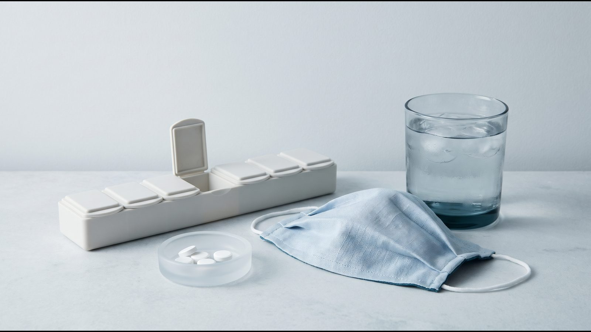

Ozempic®, Mounjaro® и другие лекарства: взаимодействия, наркоз и операции

Взаимодействия Mounjaro® (тирзепатид) и Ozempic® (семаглутид) с другими лекарствами связаны в основном с тем, что они замедляют опорожнение желудка и снижают уровень глюкозы. Данные о тирзепатиде приведены по инструкции EMA и, где она отличается, по американской инструкции Zepbound® (тирзепатид), об Ozempic® — по инструкции МЗ Украины.
Взаимодействия GLP-1 с другими лекарствами: короткий ответ
Большинство таблеток во время терапии принимают без изменений (для тирзепатида это прямо пишет EMA), но есть исключения: инсулин и препараты сульфонилмочевины (риск гипогликемии), варфарин и другие лекарства с узким терапевтическим диапазоном, а для тирзепатида ещё и оральные контрацептивы, по которым EMA и FDA расходятся. Перед наркозом или глубокой седацией о терапии должны знать хирург, анестезиолог и врач, который её назначил. Самостоятельно менять дозы, пропускать или отменять инъекции не стоит.
Таблица: лекарства и ситуации, что известно и что делать
| Лекарство или ситуация | Что известно | Что делать |
|---|---|---|
| Оральные контрацептивы и Mounjaro® | EMA: коррекция не нужна. FDA и NICE: 4 недели после старта и после каждого повышения дозы неоральный или дополнительный барьерный метод | Обсудить контрацепцию с врачом до первой инъекции |
| Оральные контрацептивы и Ozempic® | Снижения эффективности не ожидается | Сказать врачу, какие таблетки принимаете |
| Инсулин, сульфонилмочевина | Риск гипогликемии выше; его можно снизить, уменьшив дозу этих лекарств | Дозу меняет только врач |
| Варфарин, дигоксин, другие лекарства с узким терапевтическим диапазоном | Ozempic®: с варфарином и производными кумарина частый контроль МНО в начале; экспозиция дигоксина не менялась. Mounjaro®: мониторинг варфарина, дигоксина на старте и после повышения дозы | Согласовать контроль с врачом, который ведёт эти лекарства |
| Левотироксин | Таблетки Wegovy® (семаглутид): экспозиция тироксина +33 %, рассмотреть контроль функции щитовидной железы | Сказать эндокринологу |
| Наркоз, глубокая седация, эндоскопия | Сообщали об аспирации содержимого желудка; подходы ASA 2023 и обществ 2024 разные | Заранее сообщить хирургу, анестезиологу и своему врачу |
Контрацептивы и тирзепатид: где инструкции расходятся
По инструкции EMA после одной дозы тирзепатида 5 мг максимальная концентрация этинилэстрадиола снизилась на 59 %, общая экспозиция (AUC) на 20 %, и EMA считает это клинически незначимым. Американская инструкция Zepbound® и английские рекомендации NICE NG246 (2025), которые ссылаются на британскую инструкцию тирзепатида, осторожнее: они советуют на 4 недели после старта и после каждого повышения дозы перейти на неоральный метод или добавить барьерный. На гормональные методы, которые не принимают внутрь, по данным FDA влияния не ожидается.
Метод выбирает врач, но вопрос стоит поднять до первой инъекции: предостережение FDA и NICE касается именно первых недель и периодов после повышения дозы. Женщинам репродуктивного возраста EMA рекомендует контрацепцию во время лечения тирзепатидом. Другие предостережения по нему собраны в статье о тирзепатиде.
С семаглутидом иначе: по украинской инструкции Ozempic® снижения эффективности оральных контрацептивов не ожидается, экспозиция левоноргестрела даже выросла на 20 %.
Инсулин и сульфонилмочевина: риск гипогликемии
Гипогликемия означает слишком низкий уровень глюкозы в крови. Её риск растёт, когда Ozempic® или Mounjaro® сочетают с инсулином или препаратами сульфонилмочевины, которые усиливают выделение инсулина. По инструкции Ozempic® тяжёлую гипогликемию при таком сочетании наблюдали у 1,2 % пациентов на сульфонилмочевине и у 1,5 % на инсулине. Для тирзепатида EMA приводит исследование снижения веса у людей с диабетом 2 типа: гипогликемия (глюкоза ниже 3,0 ммоль/л) была у 10,3 % принимавших сульфонилмочевину и у 2,1 % не принимавших; тяжёлой гипогликемии в этом исследовании не было.
Обе инструкции пишут, что риск можно снизить, уменьшив дозу инсулина или сульфонилмочевины, а для тирзепатида EMA указывает, что нужен самоконтроль глюкозы. На сколько и когда уменьшать дозу, решает врач. При таких сочетаниях инструкции также советуют остерегаться гипогликемии за рулём.
Варфарин, левотироксин и другие таблетки
Из-за замедленного опорожнения желудка таблетки могут всасываться медленнее. По данным EMA для тирзепатида этот эффект сильнее всего в начале лечения, а инструкция Ozempic® советует осторожность с лекарствами, которым нужно быстрое всасывание.
Отдельно инструкции выделяют лекарства с узким терапевтическим диапазоном, где важна даже небольшая разница в концентрации. Для тирзепатида EMA рекомендует наблюдать за пациентами на варфарине или дигоксине, особенно на старте и после повышения дозы. На семаглутиде экспозиция варфарина не менялась, но с аценокумаролом регистрировали снижение МНО (международного нормализованного отношения, показателя свёртываемости крови), поэтому в начале лечения советуют частый контроль МНО.
О левотироксине данные есть в инструкции EMA для таблеток Wegovy® (пероральный семаглутид): экспозиция тироксина выросла на 33 %, и EMA советует рассмотреть контроль показателей щитовидной железы. В инструкции инъекционного Wegovy® такого взаимодействия нет. Если вы принимаете левотироксин, скажите эндокринологу: он решит, нужны ли анализы.
Наркоз, седация и операции: что изменилось с 2023 года
Инструкции EMA для Mounjaro® и Wegovy® и украинская инструкция Ozempic® предупреждают: у пациентов на агонистах рецепторов GLP-1 под общей анестезией или глубокой седацией сообщали о лёгочной аспирации, то есть попадании содержимого желудка в дыхательные пути. Листок-вкладыш Mounjaro® прямо просит сказать врачу о препарате, если предстоит операция под наркозом.
ASA, 2023: рассмотреть паузу
Американское общество анестезиологов (ASA) в июне 2023 года предложило перед плановыми вмешательствами рассмотреть паузу: еженедельный препарат не вводить за неделю до процедуры, ежедневный — в день процедуры, независимо от показания (диабет 2 типа или снижение веса), дозы и типа вмешательства. Если препарат назначен от диабета и пауза длиннее интервала между дозами, ASA советует согласовать с эндокринологом временную сахароснижающую терапию, чтобы избежать гипергликемии.
Если в день процедуры есть выраженная тошнота, рвота, вздутие или боль в животе, ASA советует рассмотреть перенос планового вмешательства. Если паузы не было, а симптомов нет, анестезиолог действует как при полном желудке или оценивает желудок с помощью УЗИ. Экстренные операции проводят, считая желудок полным.
Рекомендации обществ, 2024: по умолчанию продолжать
В 2024 году общества гастроэнтерологов, бариатрических и эндоскопических хирургов и Международное общество периоперационной помощи пациентам с ожирением (AGA, ASMBS, SAGES, ISPCOP) выпустили совместные рекомендации, ценность которых подтвердила ASA. По ним GLP-1-терапию можно продолжать перед операцией, если нет повышенного риска задержки опорожнения желудка. Риск повышают:
- этап повышения дозы, а не поддерживающая доза;
- более высокая доза;
- еженедельный, а не ежедневный препарат;
- тошнота, рвота, боль в животе, диспепсия, запор;
- гастропарез, болезнь Паркинсона и другие причины медленного опорожнения желудка.
Об отмене препарата только из-за избыточного веса или ожирения, когда факторов риска нет, авторы предупреждают: это может быть проявлением предвзятости к весу. Если паузу делают, то по схеме ASA. При сомнениях возможны жидкая диета не менее 24 часов до процедуры и УЗИ желудка в день вмешательства, а вместо отмены процедуры авторы предлагают взвесить быструю последовательную индукцию наркоза: предотвращение отмены, по их мнению, может быть приоритетом.
Оба документа — консенсус экспертов, а не рекомендации на основе доказательств. Инструкция Zepbound® тоже признаёт, что данных мало, чтобы сказать, помогает ли пауза.
Что сказать врачам перед процедурой
- Название препарата и дозу
- День последней инъекции
- Этап терапии: повышение дозы или поддерживающая доза
- Есть ли тошнота, рвота, вздутие, боль в животе или запор
- Другие лекарства, особенно инсулин, сульфонилмочевину, антикоагулянты
- Диагнозы, которые замедляют опорожнение желудка
[КОММЕНТАРИЙ ВРАЧА: о чём чаще всего забывают сказать анестезиологу или эндоскописту, 2–3 предложения]
Частые вопросы
Нужно ли отменять Ozempic® или Mounjaro® перед операцией?
Универсального правила нет: ASA (2023) предлагало рассмотреть паузу, а рекомендации 2024 года при отсутствии факторов риска разрешают терапию продолжать. Решение принимают анестезиолог, хирург и ваш врач.
Касается ли это гастроскопии и колоноскопии?
Да, если их делают под глубокой седацией или наркозом; рекомендации 2024 года отдельно упоминают и эндоскопию. Скажите о терапии врачу, который назначает процедуру, и анестезиологу.
Что, если операция экстренная?
Экстренное вмешательство из-за GLP-1-терапии не откладывают: по ASA его проводят, считая желудок полным. Поэтому скажите медикам о препарате и дне последней инъекции, как только это возможно.
Можно ли вместе с Ozempic® принимать парацетамол?
По украинской инструкции Ozempic® коррекция дозы парацетамола не нужна. О любых новых лекарствах во время терапии сообщайте врачу, который её ведёт.
Что дальше
Если вы планируете терапию и принимаете другие лекарства, принесите их список на консультацию; как его составить, описано в статье о подготовке к консультации эндокринолога. Побочные реакции разобраны отдельно для Ozempic® и Mounjaro®.
Источники
- Mounjaro: EPAR Product Information (SmPC, Package leaflet). EMA, 2026. https://www.ema.europa.eu/en/documents/product-information/mounjaro-epar-product-information_en.pdf
- ZEPBOUND (tirzepatide): Prescribing Information. FDA, DailyMed, 2026. https://dailymed.nlm.nih.gov/dailymed/drugInfo.cfm?setid=487cd7e7-434c-4925-99fa-aa80b1cc776b
- Інструкція для медичного застосування лікарського засобу ОЗЕМПІК® (РП UA/19176/01/01, ред. 15.07.2026). МОЗ України, Державний реєстр лікарських засобів, 2026. http://www.drlz.com.ua/ibp/lz_www.nsf/id/4513FF4967F3CA9142258E3C0033EB31/$file/UA191760101_BA8B.pdf
- Wegovy: EPAR Product Information (SmPC). EMA, 2026. https://www.ema.europa.eu/en/documents/product-information/wegovy-epar-product-information_en.pdf
- NICE NG246. Overweight and obesity management: medicines and surgery. NICE, 2025. https://www.nice.org.uk/guidance/ng246/chapter/Medicines-and-surgery
- American Society of Anesthesiologists. Consensus-Based Guidance on Preoperative Management of Patients (Adults and Children) on GLP-1 Receptor Agonists. ASA, 2023. https://www.asahq.org/about-asa/newsroom/news-releases/2023/06/american-society-of-anesthesiologists-consensus-based-guidance-on-preoperative
- Kindel TL et al. Multi-society clinical practice guidance for the safe use of glucagon-like peptide-1 receptor agonists in the perioperative period. Surg Endosc, 2025;39:180–183 (online 2024). https://pmc.ncbi.nlm.nih.gov/articles/PMC11666732/
Материал носит информационный характер и не заменяет консультацию врача. Препараты назначает врач после консультации.
Читайте также